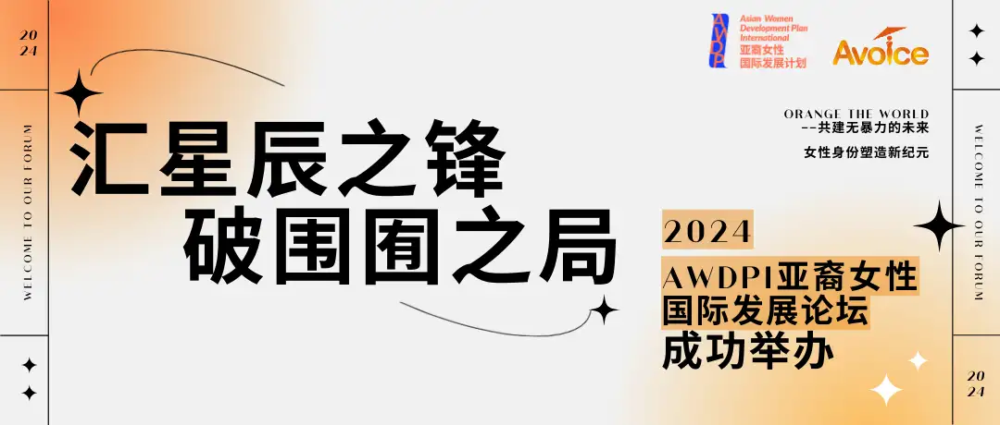

2024年11月23日至24日，2024AWDPI亚裔女性国际发展论坛在线上成功举办。本届论坛围绕“Orange the World——共建无暴力的未来”“女性身份塑造新纪元”两大主题，与世界各地关注亚裔女性发展的政府部门、学术机构、公益组织、专家学者、意见领袖和热心人士展开深度对话。
在为期两天的论坛直播中，54名嘉宾“齐聚一堂”，通过学术演讲、圆桌讨论、论文评议和辩论赛四个环节，围绕亚裔女性在赋能和发展中面临的障碍和挑战，以多维度、前瞻性的视角，与近千名嘉宾 “同台”对话交流，分享和探讨在性别暴力、就业、创业、政治赋权、科技发展、气候变化、影视艺术等领域中的亚裔女性/女性议题。
一
学术演讲：聚焦女性议题，
分享深耕成果
12月23日上午启动的学术演讲环节聚焦 家庭暴力、亚裔劳工、亚裔女性政治和经济赋能等关键议题，邀请了八位嘉宾分享相关研究成果。
李玉玲
作为主办方代表，AWDPI亚裔女性国际发展计划理事、汉盛律师事务所创始及管理合伙人李玉玲女士介绍了AWDPI在亚裔女性的发展和赋能方面所做的工作，并对与会嘉宾及人员表示了深切感谢。李玉玲女士指出，AWDPI亚裔女性论坛不仅是一个分享经验，交流思想的平台，更是一个倡导和推动变革的重要契机，希望与希望和各界有志人士共同推动性别友好的环境，让女性走向更广阔的舞台。
郑安妮
AWDPI亚裔女性国际发展计划人力资源部负责人郑安妮女士向与会嘉宾介绍了机构的整体运作模式 ，以及陪伴成长的、为机构源源不断地注入新鲜血液的志愿者们的微光故事。
张晓姌
身兼AWDPI亚裔女性国际发展计划理事的成都市残疾人福利基金会秘书长张晓姌女士 以中国优秀传统文化为剖析视角，阐释了它对现代女性身份塑造的积极意义和作用。
王延萍
担任亚裔女性国际发展计划理事、知名反家暴专家和高级社工师王延萍女士的演讲从95世妇会（第四届世界妇女大会）说起，站在今天的节点上回观反家暴的路程。
仁仁律师
作为在一线的法律工作者，知名婚姻家事律师、自媒体品牌仁仁不虚此行主理人仁仁律师带来了有关精神暴力的主题演讲。她将专业理论与实际案例结合，细致分析了为什么女性难以摆脱受暴的环境；以及奴性和斯德哥尔摩综合症如何成为女性无法挣脱暴力的障碍。
王林
BSR中国总监、中国供应链劳工问题领域专家王林多年来一直对女性劳工有所关注。根据研究和自身经验，她分享了 在全球化经济的背景下，如何在相应链条中赋能女性、支持女性已经成为社会需要讨论、推动且创新的方向。
许辉
德国耶拿大学社会学博士、中德技能与社会发展研究中心创始人许辉先生的演讲是关于亚裔女性劳工问题的。他从语言、市场竞争力、工作环境、薪资待遇等方面阐述了海外亚裔女性的生存困境，并分析了导致困境的底层逻辑。在他看来，现在高层成功女性的叙事不少，但基层声音不可被忽视。
张宁
Flatfee小肥网创始人和CEO、美国律所Cross-border Counselor LLP创始合伙人张宁女士根据自己在国多年的工作经验和研究分析，分享了自己对美国工作场域内亚裔女性经济赋权的相关观察。她表示： 在主导的话语权方面，亚裔女性的地位仍然处于劣势趋向。
孙一
AWDPI亚裔女性国际发展计划理事、美国宾州女性选民联盟首位亚太裔副主席、美国前宾州州长、亚太裔事务委员会首位女性移民主任孙一女士带来了 亚裔女性政治权益方面的发展、机遇、困境和挑战。孙一女士提到，亚裔女性在入学、求职、生活和参与政治等方面都面临尴尬境地。尽管如此，在亚裔女性的集体抗争中，人们亦能看见不少华裔女性的身影，她们不仅成功获得投票权，也给现今的女性带来了勇气和发声的权利，成为华裔女性的榜样和典范。
二
圆桌讨论：汇聚专家智慧，
探讨亚裔女性国际如何突围
圆桌讨论环节涵盖非遗传承、女性平台、人工智能、影视艺术、女性创业、气候变化、无障碍建设、乡村发展 等八大主题，汇聚各领域专家的智慧，共同探讨亚裔女性在这些领域中的挑战与机遇。
01
【圆桌讨论】从本土文化到世界舞台：女性赋能非遗传承与传播
井秋红
刘晓玉
潘妙言
万姜红
在“从本土文化到世界舞台:女性赋能非遗传承与传播” 的圆桌讨论中，四位嘉宾的对谈聚焦于非遗文化的传承与创新，讨论当今时代背景下，女性如何通过创意和领导力推动非遗的可持续发展，以及如何吸引更多的年轻女性来加入非遗的保护与传播，助力传统文化从本土走向世界的舞台，共同塑造文化多样性。
在非物质文化遗产传承人口述史项目创始人、福布斯 FGA 国际化领军人才潘妙言主持下，徐州曹氏香包第四代传承人、国家级非物质文化遗产徐州香包国家级传承人井秋红，景德镇陶瓷大学美术学院教授、景德镇传统颜色釉瓷烧制及吉州窑陶瓷烧制技艺传承人刘晓玉，三百年非遗民族品牌姜氏古茶&南路边茶制作技艺传承人、国家级非遗创新先锋模范人物万姜红参与了讨论。
02
【圆桌讨论】全球视野下的女性平台：如何赋能未来的女性领导者
段芳
王田田
邱冬英
尹洋
由阅她女性创始人、中央广播电视总台「最美导师」段芳主持的“全球视野下的女性平台:如何赋能未来的女性领导者” 的讨论，邀请到了励媖中国(Lean In China)联合创始人、短视频IP 孵化及品牌咨询师邱冬英，尚汇国际教育集团董事长、央广网女性教育频道负责人王田田，阳光妈妈闺蜜荟创始人、畅销书《妈妈的魔法书:唤醒孩子的内驱力》和《和孩子一起优秀》作者尹洋。
四位嘉宾一起探索女性平台在全球化的背景下，如何去倡导使命价值、挖掘女性领导力的潜力，共同来构建多样化、包容性以及全球可持续化的女性赋能的生态。四位嘉宾分别从 平台如何支持女性、对女性成长赋能有什么特别实践、创业阶段中的感悟历程、获得的成果和心得分享了自己的真知灼见。
03
【圆桌讨论】AI变革时代的女性角色：技术创新与国际合作
檀林
李宝琼
石岚
吴玲伟
当下正值AI科技领域的风口浪尖，每一步都至关重要。时代洪流中，该如何顺应趋势，给予变迁回音？ 身为新兴产业中女性，又将引领怎样的道路？
在“AI变革时代的女性角色:技术创新与国际合作”的圆桌讨论中，四位嘉宾就女性职业发展、组织结构变革、国际合作路径探究、对年轻女性的期望和建议四个维度对AI科技领域进行全方位、多元化的讨论，分析了女性在这一行业可能面临困境与机遇，继而提出可参考应对方法策略，为后来人提供了宝贵经验和洞见。
本轮讨论由北大汇丰创新创业中心未来实验室发起人兼首席未来学家、2024 年度北京大学校友创业联合会副会长檀林主持，嘉宾分别是米仓智库平台总经理、葡萄找车 & 美葡智行创始人李宝琼，咖菲科技创始人兼CEO、MIT斯隆管理学院院董石岚，已来科技董事长、AA 加速集团创始人兼首席顾问吴玲伟。
04
【圆桌讨论】连接世界的女性叙事：影视艺术中的多样性与文化融合
唐雪丹
陈晓雯
高雨儿
钱海英
“连接世界的女性叙事:影视艺术中的多样性与文化融合” 圆桌讨论由CiLENS柏林华语影展创始人&艺术总监、思影电影研学联合创始人、电影策展人唐雪丹主持，嘉宾邀请到德蒙福特大学副教授、博士生导师、英中电影合作研发中心创始人及总监陈晓雯，中国内地女演员、华扬联众公益基金会公益大使高雨儿，班夫中国创始人、中国户外电影行业开创者和引领者钱海英。
四位嘉宾从各自的角度和经验出发，较为实际地讨论了关于影视艺术中女性创作者的一系列问题。她们在女性叙事的表达方式及其价值多样性叙事在跨文化对话中的作用、女性叙事还可以有怎样的突破创新、希望看见怎样的女性叙事表达等方面进行探究。四位嘉宾都谈到，中国文化是引领中国影视的特殊密码，也同样起到推动传统文化发展的作用。聆听时代变奏，注重差异表达，把中国女性的故事和力量传向更广阔的天地。
05
【圆桌讨论】女性领导力与国际创业生态：机遇与挑战
陆熹
罗元
杨震
张胜男
“女性领导力与国际创业生态：机遇与挑战”的圆桌讨论深入探讨了女性在创业生态中的优势和面临的挑战。
女性领导者以其卓越的 凝聚力、连接力、协调和沟通能力，以及对社会资源的高效利用，成为创业领域的重要力量。然而，女性领导者也面临着母职责任重担、环境文化偏见、自我认知过于谦和等多重挑战。各位嘉宾鼓励女性不应自我设限，而应勇敢尝试，不断学习提高自我认知，并呼吁社会更多关注女性领导者的发展。
这场对谈由熹时区创始人、G20青年企业家联盟杰出青年人才陆熹主持，对谈嘉宾邀请到广西师范大学创新创业学院副院长、教育部课程思政教育名师罗元，海蕴女创理事长、上海长治商会秘书长杨震，BrainCo强脑科技产品运营负责人、哈佛大学教育学院脑科学协会创始人&国际神经科学与教育协会创始人张胜男。
06
【圆桌讨论】全球气候治理中的女性力量：合作与共创
赵文静
舒玉莹
杨培丹
卢之遥
在“全球气候治理中的女性力量:合作与共创”的圆桌讨论中，对谈中嘉宾们纷纷表示女性对于气候问题敏感度更高，会更有韧性和定力思考可持续发展等问题，会更加关注性别平等和包容性等问题，在工作中往往展现出更好的沟通交流能力和跨领域合作能力。嘉宾们也纷纷表示，希望女性能够在顶层决策方面有更多的参与，鼓励女性勇敢表达 ，也期待能够搭建更多发声平台，让女性的力量和贡献被更多人看见。
这场对谈由上海好润环保科技有限公司创始人赵文静主持，对谈嘉宾邀请到绿光气候（北京）科技发展有限公司创始人、绿光气候研究院院长舒玉莹，大道应对气候变化促进中心（C Team）主任、四川成都高新区希望社区中心创始理事杨培丹，SEE基金会气候变化与商业可持续项目总监、《我们选择的自己》联合作者卢之遥。
07
【圆桌讨论】无障碍与国际对话：女性如何推动包容与平等的未来
韩冬雪
彭霖倩
彭玉娇
周江南
“女性如何推动包容与平等的未来” 的圆桌讨论由知名财经主持人、第八届中国东盟礼仪形象大使枢立主持，对谈嘉宾邀请到上海译迩科技、番石榴文化及有爱无碍传媒创始人兼CEO、国内首位无障碍内容制作人韩冬雪，声随形动（重庆）文化传媒有限公司CEO、重庆两江新区知珑社会工作服务中心理事长彭霖倩，鲲力BEST融合美学与可持续发展中心发起人、亚太残障女性组织网络成员彭玉娇，深圳市无障碍城市联合会秘书长、深圳启明无障碍科技有限公司CEO周江南。
本场论坛深入探讨了无障碍事业中性别角色的多样性与技术进步的重要性。在无障碍服务设施领域，女性以其坚韧、出色的共情能力、表达能力和感染力等品质，发挥着不可替代的作用。同时，无障碍对性别平等起到补充和提携作用，诸如残疾人参与直播行业等培训和无障碍建设充分挖掘了女性的优势，为更多残障女性提供了新的机会。
08
【圆桌讨论】乡村发展的国际视野：女性的实践与影响力
杨玲
石嫣
孙俊丽
徐飞
“乡村发展的国际视野：女性的实践与影响力”的对谈由西安市乡村发展公益慈善基金会副秘书长、乡村“她力量”项目发起人杨玲主持，对谈嘉宾邀请到国际社会生态农业联盟（URGENCI）联合主席、世界范围生态哲学领域和生态文明领域的最高奖项-第15届“柯布共同福祉”奖获得者石嫣，莱阳市如果丽生态种植专业合作社理事长、烟台市人大代表孙俊丽，鹭飞优品、禾祥西农业、奉瑛堂生物创始人、厦门大学青年创业校友会理事徐飞。
本场论坛聚焦于女性在乡村振兴中的重要作用以及中国乡村经济和文化在国际市场中的潜力。嘉宾们建议想要返乡创业的女性根据自身条件选择产业，多与有经验者真诚沟通。同时，呼吁社会提供更多支持和关注，以激发女性返乡创业的积极性。
三
辩论表演赛
“女性优先是否有助于性别平权？”
在本场辩论赛中，辩手们围绕“在当下，‘女性优先’是否有助于性别平权？”进行了深入讨论。正方辩手为AWDPI亚裔女性国际发展计划合作与发展顾问、未来之光家族幸福办公室联合创始人、广州市越秀区政协委员陈嘉俊，可持续发展青年创辩大会联合创始人、世界经济论坛达沃斯全球杰出青年苏喜枝，华语辩论世界杯名校邀请赛全程最佳辩手、新加坡国立大学企业开发品牌营销咨询顾问曾梓翔。反方辩手为莫纳什大学传播与媒介研究博士、中华杯全程最佳辩手常爱梓，中山大学辩论队前队长、教练、爱奇艺网综《奇葩说》 前内容培训导师陈彧谦，陕西妇女理论婚姻家庭研究会理事、陕西高校社会性别教育与创新创业导师张新鑫。
陈嘉俊
苏喜枝
曾梓翔
正方认为女性优先是性别平权的体现 ，有助于解决女性面临的歧视问题，并促进性别平等。正方强调，真正的平等不应忽视男女差异和目前女性弱势群体的特点，而是在理解女性真实处境的基础上，促进女性优先措施的落实。
V.S.
常爱梓
陈彧谦
张新鑫
反方则认为女性优先政策可能强化性别刻板印象， 阻碍性别平权的真正实现。他们强调，现有诸多由女性自发发起的口号和运动已经有效地解决了男女不平等问题，无需再依赖强调女性依附性的‘女性优先’观念。
在本场辩论中，双方辩手都以实现性别平等 为最终目标，就其实现路径进行了激烈的讨论。双方辩手的激烈交锋，不仅展现了他们对性别平等议题的深刻思考，也为观众提供了对辩题进一步深入思考的机会。
四
论文评议
为关注性别议题的青年搭建学习平台
本次论坛特设论文评议环节，旨在提供更多学术研究成果分享机会，激发公众参与性别议题研究的热情。
裴谕新
王勇
王辰瑶
赵芳
本次AWDPI论坛论文评议环节由钱思雨主持，共吸引国内外16篇投稿，经过严格的讨论和评选，最终四篇突出作品参与评议。
该环节邀请了四位知名学者担任评议嘉宾，涵盖社会学、经济学、新闻传播与社会工作等领域，分别是：中山大学社会学与人类学学院副教授、富布莱特学者裴谕新教授，北京大学新结构经济学研究院学术副院长、新结构经济学研究联盟秘书长王勇教授，南京大学新闻传播学院教授、新闻创新实验室及全球公益传播研究中心主任王辰瑶教授，复旦大学社会发展与公共政策学院社会工作学系主任、复旦-东芬儿童保护研究中心主任赵芳教授。
四篇论文分别从在丹麦的菲律宾年轻女性劳工的定性研究，中国性别不平等议题下时间使用的历史背景、现状和未来方向，女性主义视角下公共领域中的性别话语霸权现象研究，以及女性形象在品牌广告中的局限性和未来发展方向这四个方向进行了研究与分析，并且论文作者接受了四位嘉宾的中肯评议和鼓励。
五
结语
本届论坛在规模、形式、课题和学术氛围上再创新高，来自各个领域的专家学者汇聚一堂，带来了精彩的分享和宝贵的经验，深刻探讨了女性在现代社会多个领域所面临的挑战和机遇，共同见证了一场思想的盛宴。
论坛的闭幕不是终点。
未来，AWDPI亚裔女性国际发展计划将与关注亚裔女性发展和赋能的个人、机构、团体、企业、政府部门等通力合作，不断推动性别平等女性赋能的进程，共同为构建一个 更加平等和包容的未来而努力。
撰文丨赵航 王一然
排版/封面丨刘诗